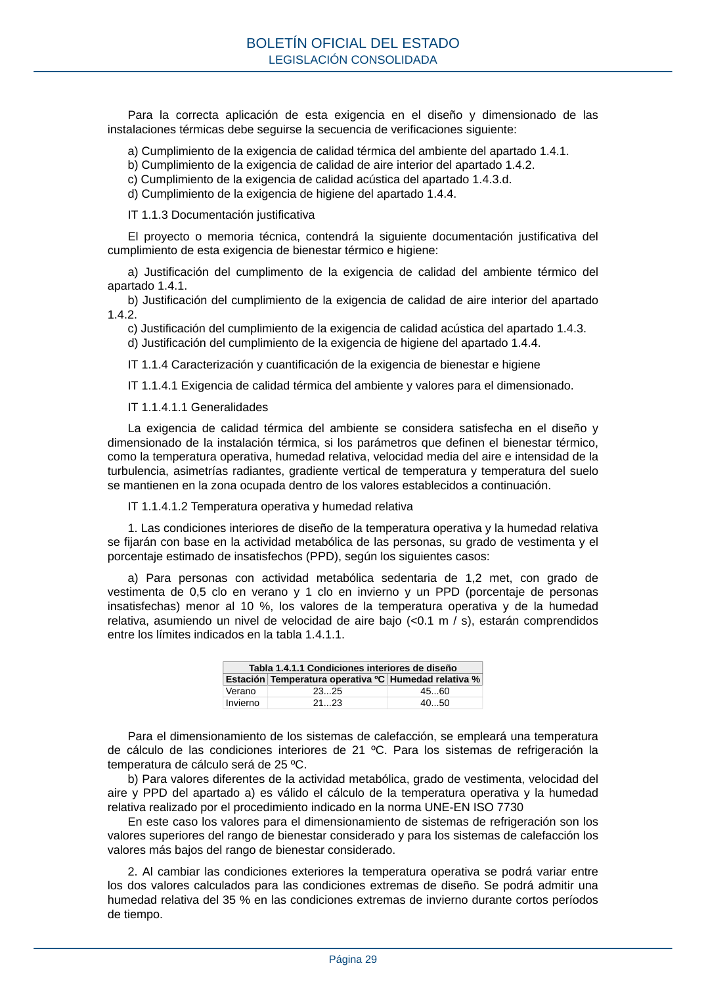

DB-HE2 RITE · edición 2022-08-02 · capa asociada
Documento RITE-asociada · SHA-256 del PDF ad1680c83bf4c7f5c656af1794c32ad0669ad9f36ac293737ff3f95177ff7b26
Página física 29 de 97.
Copia fiel del PDF fuente · Fuente oficial
Ficha de la disposición en la fuente oficial
Texto extraído y reorganizado: Basado en datos de la Agencia Estatal Boletín Oficial del Estado. PDF reproducido: Fuente de los datos: Agencia Estatal Boletín Oficial del Estado.
Formato: Texto de la página (Markdown)
Para la correcta aplicación de esta exigencia en el diseño y dimensionado de las instalaciones térmicas debe seguirse la secuencia de verificaciones siguiente: a) Cumplimiento de la exigencia de calidad térmica del ambiente del apartado 1.4.1. b) Cumplimiento de la exigencia de calidad de aire interior del apartado 1.4.2. c) Cumplimiento de la exigencia de calidad acústica del apartado 1.4.3.d. d) Cumplimiento de la exigencia de higiene del apartado 1.4.4. IT 1.1.3 Documentación justificativa El proyecto o memoria técnica, contendrá la siguiente documentación justificativa del cumplimiento de esta exigencia de bienestar térmico e higiene: a) Justificación del cumplimento de la exigencia de calidad del ambiente térmico del apartado 1.4.1. b) Justificación del cumplimiento de la exigencia de calidad de aire interior del apartado 1.4.2. c) Justificación del cumplimiento de la exigencia de calidad acústica del apartado 1.4.3. d) Justificación del cumplimiento de la exigencia de higiene del apartado 1.4.4. IT 1.1.4 Caracterización y cuantificación de la exigencia de bienestar e higiene IT 1.1.4.1 Exigencia de calidad térmica del ambiente y valores para el dimensionado. IT 1.1.4.1.1 Generalidades La exigencia de calidad térmica del ambiente se considera satisfecha en el diseño y dimensionado de la instalación térmica, si los parámetros que definen el bienestar térmico, como la temperatura operativa, humedad relativa, velocidad media del aire e intensidad de la turbulencia, asimetrías radiantes, gradiente vertical de temperatura y temperatura del suelo se mantienen en la zona ocupada dentro de los valores establecidos a continuación. IT 1.1.4.1.2 Temperatura operativa y humedad relativa 1. Las condiciones interiores de diseño de la temperatura operativa y la humedad relativa se fijarán con base en la actividad metabólica de las personas, su grado de vestimenta y el porcentaje estimado de insatisfechos (PPD), según los siguientes casos: a) Para personas con actividad metabólica sedentaria de 1,2 met, con grado de vestimenta de 0,5 clo en verano y 1 clo en invierno y un PPD (porcentaje de personas insatisfechas) menor al 10 %, los valores de la temperatura operativa y de la humedad relativa, asumiendo un nivel de velocidad de aire bajo (<0.1 m / s), estarán comprendidos entre los límites indicados en la tabla 1.4.1.1. Tabla 1.4.1.1 Condiciones interiores de diseño Estación Temperatura operativa ºC Humedad relativa % Verano 23...25 45...60 Invierno 21...23 40...50 Para el dimensionamiento de los sistemas de calefacción, se empleará una temperatura de cálculo de las condiciones interiores de 21 ºC. Para los sistemas de refrigeración la temperatura de cálculo será de 25 ºC. b) Para valores diferentes de la actividad metabólica, grado de vestimenta, velocidad del aire y PPD del apartado a) es válido el cálculo de la temperatura operativa y la humedad relativa realizado por el procedimiento indicado en la norma UNE-EN ISO 7730 En este caso los valores para el dimensionamiento de sistemas de refrigeración son los valores superiores del rango de bienestar considerado y para los sistemas de calefacción los valores más bajos del rango de bienestar considerado. 2. Al cambiar las condiciones exteriores la temperatura operativa se podrá variar entre los dos valores calculados para las condiciones extremas de diseño. Se podrá admitir una humedad relativa del 35 % en las condiciones extremas de invierno durante cortos períodos de tiempo. BOLETÍN OFICIAL DEL ESTADO LEGISLACIÓN CONSOLIDADA Página 29

Datos candidatos: compruebe celdas y notas en el PDF.